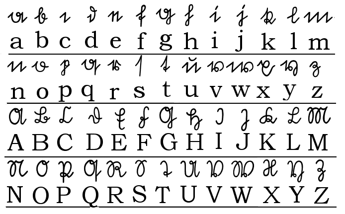

Programming, electronics, lifestyle
На прошлой неделе у меня в университете начался новый предмет под названием математическая логика. В ходе лекции, объясняя логику на примере функций, преподаватель упомянул про обозначения используемые в его функциях (так называемый готический алфавит). А также сказал, что к сожалению знает всего несколько букв. Я подсуетился и в тот же вечер нашел «его» алфавит в поиске. Выглядит он довольно необычно, и его сложно спутать с латиницей или ивритом, разве что с алфавитом российских врачей =D
